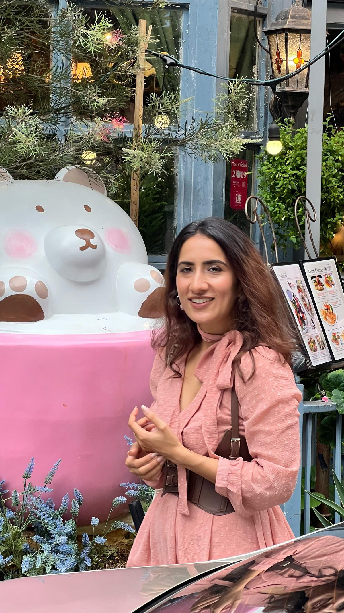

LIVE · enrolling
Remote Launchpad
For freshers and first-time remote job seekers
We help you pick a role, learn the tools, build a complete portfolio and send your first applications.
The only academy that holds your hand across the bridge: from role confusion and skill gaps to remote-friendly roles, with clarity and preparation.
Shreya helped me land a premium sockwear brand for their social media management.
I applied what I learned on my own LinkedIn and was already seeing results.
I came very close to giving an interview with the opportunity you guys brought.
Straight from the graduation call. Short, because they said it better than we can.
I'm in talks with a fintech brand in Bangalore. The co-founder left Microsoft after eight years. I approached him.
It was extremely validating. I discussed it with my parents as well.
I'm a beginner and I was really scared. Now I'd be confident enough to talk to anybody about social media management.
I'm an introvert. Because of this cohort I had good talks with people, and we helped each other build portfolios.
I've printed all the resources. They're in front of my eyes. I'm more efficient now.
I'd never built reels. One assignment was to build a reel. It's really amazing.
I came actually very close to giving an interview with the opportunity that you guys brought.
I started applying whatever I learned from you on my own LinkedIn, and I was already seeing results.
Bombing you all with a lot of questions and then getting the answers for them. That was really supportive.
I'm in talks with a fintech brand in Bangalore. The co-founder left Microsoft after eight years. I approached him.
It was extremely validating. I discussed it with my parents as well.
I'm a beginner and I was really scared. Now I'd be confident enough to talk to anybody about social media management.
I'm an introvert. Because of this cohort I had good talks with people, and we helped each other build portfolios.
I've printed all the resources. They're in front of my eyes. I'm more efficient now.
I'd never built reels. One assignment was to build a reel. It's really amazing.
I came actually very close to giving an interview with the opportunity that you guys brought.
I started applying whatever I learned from you on my own LinkedIn, and I was already seeing results.
Bombing you all with a lot of questions and then getting the answers for them. That was really supportive.
She'd planned to get into content creation "from a long, long time ago." Inside the cohort she built a portfolio and a pitch deck around one target brand. Then the calls started: a premium sockwear brand for social media management, and a Bangalore fintech founder who wanted her as the face of the brand.
Deals were "in talks" on graduation day. We quote learners as they said it.
For freshers and first-time remote job seekers
We help you pick a role, learn the tools, build a complete portfolio and send your first applications.
For people with work experience who coordinate teams · 16 weeks
Scoping, agile delivery and a specialised track, with AI tools throughout. Four capstone milestones and a job-ready portfolio.
For people who enjoy content and brands
Strategy, content and analytics, with a portfolio built on a real brand. Ends with a pitch deck and outreach.
For organised people who like running things · 12 weeks
Run inboxes, calendars, research and operations for founders abroad. Work samples and a first paid trial.
For professionals who want opportunities to come to them
Headline, story, content system and outreach that gets recruiters and clients messaging you first.
Check if I'm a matchFor people already freelancing or taking side clients
Find better clients, raise your rates, package your services and build steady monthly income.
Join the waitlistNot sure which one? Take the FREE assessment
You walk away with all five, whichever cohort you pick.
Take the FREE assessment →Remote opportunities kept showing up in her feed, but nothing fit. When the cohort opened she "was like, please, let me just get shortlisted for this one." She left her full-time job, won the Career Switcher award, and got to the interview stage on an opportunity the team brought in.
3 minutes. Where you are, what you know, what you want, how much time you have.
Remote Launchpad, Social Media Manager, Virtual Assistant and more. One cohort that fits, not a menu.
8 to 12 weeks depending on the cohort. Live, with a mentor on WhatsApp. Every week ends with something you can show.
Finish the portfolio, our team sends roles and clients your way as they come in.
Bombing you all with questions and getting the answers. That was really supportive.
Those who have completed the portfolios are getting regular calls from us regarding opportunities.
She printed every resource from the cohort and kept them in front of her while she worked. After graduating she didn't go looking for one job. She set up her own social media agency, took on clients directly, and now earns around $2,000 a month running it.
Agency and income as shared with the LeepX team after the cohort. Individual results vary.

New environment, new portfolio, learning everything from scratch. On review day Shreya's reaction to her work was "extremely validating," enough that she went home and told her parents. She got the same feedback again on graduation day when she won her award.
It matches you to a role and a cohort. You share your contact details, see your result on screen straight away, and get the full version by email. If a program fits, we say so. If it doesn't, we say that too. We'd rather have the right 50 people than the wrong 500.
The recording goes up the same day, and you can drop your question into the 24-hour Q&A channel instead. You will not be behind.
No, and be careful of anyone who does. What we guarantee is the system, the feedback and the live access. By the end of your cohort you will have a profile, a portfolio and an outreach process built and reviewed. What you do with them is yours.
Most people spend four to six hours a week: the modules, the work they generate, and the Sunday Q&A. It is designed around people who already have a full-time job.
Yes. Global remote work is not a tech-only market. Operations, marketing, design, content, support, project management and admin roles are all hired remotely from India. What matters is proof, not pedigree.
You build two or three real samples during the cohort, reviewed before they go anywhere near an application. Nobody starts with a portfolio, they leave with one.
Yes. The Resource Hub, the templates and the recordings stay with you, and you stay in the alumni community where opportunities get referred forward.
Yes, and it's a fair one: if both of us put in full effort for the full length of the cohort, you show up, do the work, use the feedback, and you still don't find value, you can ask for a refund. However, in case of drop-outs or discontinuation due to personal reasons from your side, no refund will be issued.
Yes. Learners outside India can pay in their local currency; international payment options are available at checkout.
Yes. Cohort 1 had complete beginners. The assessment starts you at the right point.
For the Social Media Manager or Virtual Assistant cohorts, maybe. The LinkedIn cohort and the AI-powered Project Manager cohort (waitlist open) are built for experienced professionals. Take the assessment; it tells you honestly.
Programs are premium, one-time, EMI available. The assessment asks what fits your budget so we only recommend what makes sense for you.
Social Media Manager, Virtual Assistant and AI-powered Project Manager are among the roles companies hire remotely right now. The first two are enrolling, and the third has a waitlist. The FREE assessment tells you which one fits your background.
Yes, but not without proof. Our Remote Launchpad and Become-a-VA cohorts are built for freshers and career switchers with zero experience. You leave with a portfolio, a CV and a LinkedIn that gets calls.
Learners pitch to global companies and freelance clients who pay in USD. We teach positioning, proposals and follow-ups. No income is guaranteed; the proof you build is what gets you paid.
No. We ask for your WhatsApp number with the assessment so a human on our team can send your result and answer questions. No drip campaigns, and you can ask us to stop anytime.
3 minutes. FREE. You get matched to a role, not sold a course.